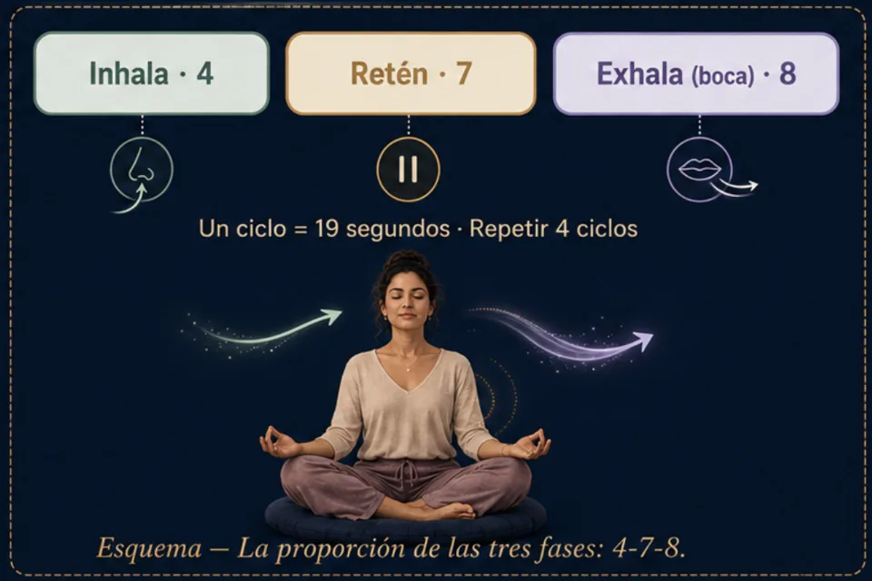

Meditación para dormir: concilia el sueño más fácil
Por qué el sueño huye cuando lo persigues, la postura nocturna, la respiración 4-7-8 y cómo actúa de verdad una meditación guiada para dormir.
Una meditación para dormir no te fuerza a dormir: ocupa suavemente la mente hasta que suelta por sí sola. Postura tumbada, respiración 4-7-8, escaneo corporal nocturno, el despertar de las 3: así puedes dormirte más fácil, esta misma noche.
Por qué el sueño huye cuando lo persigues
Apagas la luz — y justo entonces la mente se enciende: el día se repite, la lista de mañana se escribe sola, una frase del mediodía vuelve en bucle. Cuanto más intentas dormir, más se aleja el sueño — porque el esfuerzo es un estado de vigilia.
La meditación para dormir toma el camino contrario: no persigue el sueño, prepara las condiciones en las que llega solo. Le das a la atención un objeto sencillo — la respiración, las sensaciones del cuerpo, una voz tranquila — y la mente, que ya no tiene el escenario para ella, baja el telón.
La postura de la noche: tumbado, por fin
En cualquier otra meditación, dormirse es un obstáculo. Aquí es la salida triunfal. La posición tumbada — savasana — se convierte en la postura reina de la noche:

- Boca arriba, brazos a los lados, palmas hacia arriba.
- Una almohada fina bajo la cabeza; otra bajo las rodillas si la zona lumbar tira.
- En la cama, bajo el edredón: el único contexto donde meditar en la cama es recomendable — no tendrás que moverte cuando llegue el sueño.
La respiración que duerme: la 4-7-8
De todas las técnicas de respiración, la 4-7-8 es la del sueño: inhalas contando 4, retienes 7, exhalas lentamente contando 8. La exhalación larga hace el trabajo — ralentiza el ritmo cardíaco y avisa al cuerpo de que la noche puede empezar.

- Primero exhala del todo, por la boca.
- Inhala por la nariz contando 4.
- Retén el aire contando 7 — sin tensar los hombros.
- Exhala despacio por la boca contando 8, como un suspiro largo.
- Encadena de 4 a 8 ciclos y deja que la respiración vuelva a su ritmo.
Cómo actúa una meditación guiada para dormir
Una meditación guiada para dormir hace exactamente lo que la mente se niega a hacer sola por la noche: ocupa suavemente la atención. La voz recorre el cuerpo zona por zona — el escaneo corporal nocturno —, propone imágenes tranquilas, ralentiza sus propias frases y deja silencios cada vez más largos. No hay nada que lograr: solo seguirla, y dejarte atrás.
Elegirla bien
- Duración: con 10 a 20 minutos basta — el sueño suele llegar antes del final.
- Voz: elige la que te arrulle, a velocidad lenta.
- El final: una sesión que termina en silencio — sin música de cierre ni campana.
En Awakening Minds, toda la categoría Sueños & Sueño está escrita para esto: meditaciones guiadas para dormir, narradas despacio en español, que terminan en silencio — y un diario de sueños para la mañana. La app es gratis, sin suscripción, y todo funciona sin conexión, a oscuras, con el teléfono boca abajo en la mesilla.
El despertar de las 3 de la mañana
Despertarse de madrugada es normal — lo que se entrena es volver a dormirse. Tres reglas ayudan:
- Ni pantalla, ni hora. Mirar la hora lanza el cálculo mental («me quedan 3 h 40…») — justo lo que hay que evitar.
- Vuelve al cuerpo, no a los pensamientos. Un escaneo corporal lento, de los pies a la cabeza, o unos ciclos de exhalación larga.
- Si gana la agitación: mejor una meditación guiada suave con auriculares que cuarenta minutos de lucha a oscuras.
Preguntas frecuentes
¿Puedo dormirme durante una meditación guiada?
Por la noche, ese es justamente el objetivo: las meditaciones para dormir están escritas para abandonarlas a mitad. Elige una sesión que termine en silencio y deja que la voz siga sin ti.
¿Cuánto tarda en notarse?
El cuerpo se relaja desde la primera sesión; dormirse más rápido suele asentarse tras una o dos semanas de práctica regular, a la misma hora cada noche.
¿Auriculares o altavoz?
Ambos funcionan. El altavoz a bajo volumen evita quitarse los auriculares cuando llega el sueño; un solo auricular es un buen término medio si compartes habitación.
¿Prefieres practicar antes que leer?
Todo lo que describe este artículo se practica en Awakening Minds, una app de meditación gratis: 195 meditaciones guiadas en español — dormir, respiración guiada, mundos inmersivos — sin suscripción, sin anuncios, sin cuenta y sin conexión.
✦ Descubre la app gratisSigue leyendo
Cómo empezar a meditar: guía para principiantes
Qué es meditar, por qué empezar y las 5 ideas falsas que frenan a los principiantes. Una guía sencilla y gratis para tu primera meditación.
La postura de meditación: 4 posiciones válidas
Silla, piernas cruzadas, seiza o tumbado: las 4 posiciones de meditación con esquemas, y los 7 puntos de una postura digna y relajada.